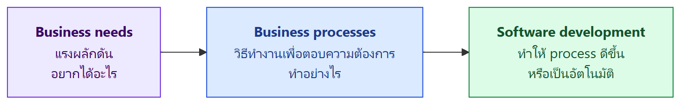
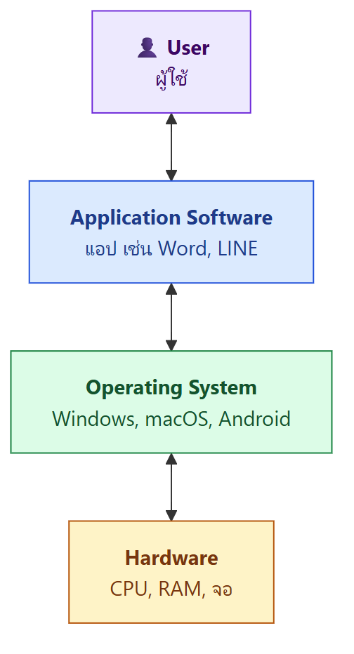
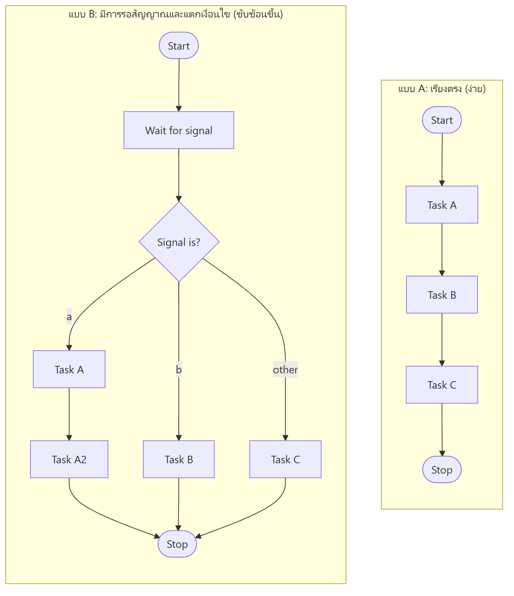
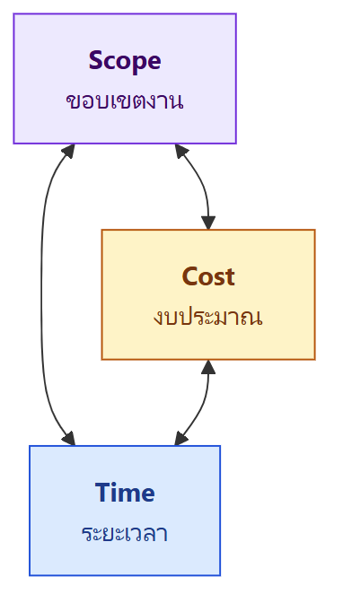
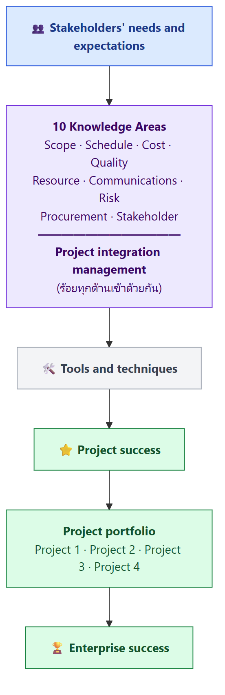
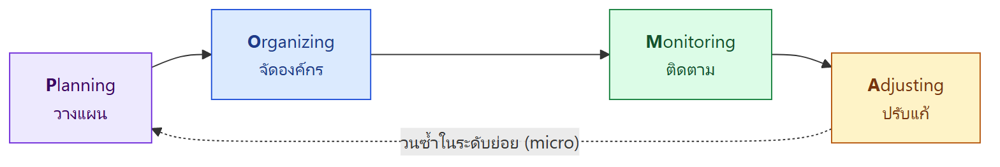
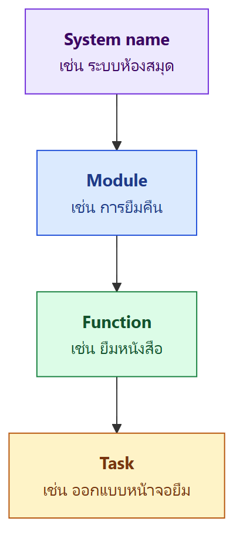
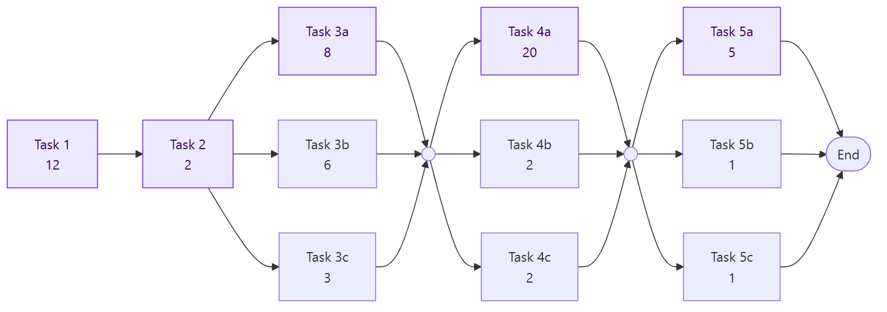
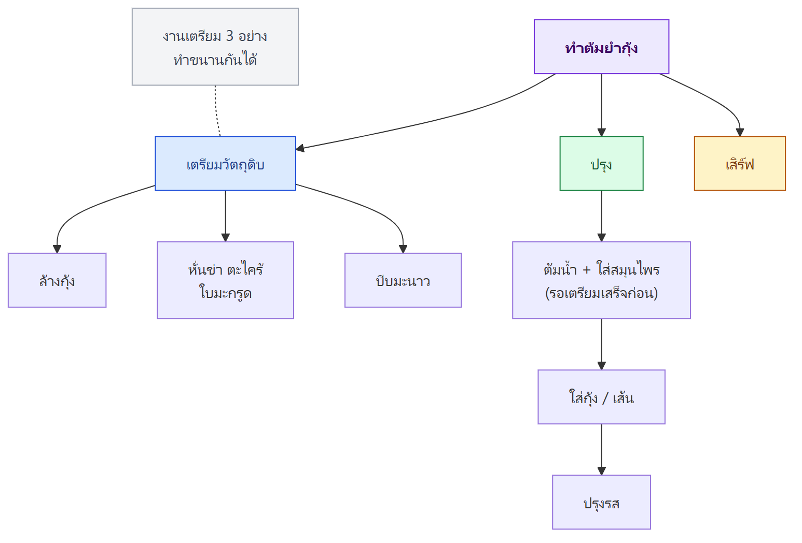

ภาพรวมบทนี้ บทแรกของวิชา ITDS261 แบ่งเป็น 2 ครึ่ง ครึ่งแรก ตอบคำถามว่า software คืออะไร ทำไมต้องมี "วิศวกรรม" ซอฟต์แวร์ และการทำซอฟต์แวร์ใหญ่ยากกว่าเขียนโปรแกรมเล็ก ๆ อย่างไร ครึ่งหลัง เป็นเรื่องการบริหารโครงการซอฟต์แวร์ (Software Project Management) ว่า project คืออะไร มีข้อจำกัดอะไร ผู้จัดการโครงการทำงานอย่างไร (POMA) และใช้เครื่องมืออะไร เช่น WBS, PERT, Gantt chart
บทนี้เป็นพื้นฐานของทุกบทต่อไป โดยเฉพาะ process model (L2) และ requirement (L3)
สารบัญ
ส่วน A – Software Engineering Foundation
- จาก business need สู่การพัฒนาซอฟต์แวร์
- Software คืออะไร และมีองค์ประกอบอะไร
- Software Engineering คืออะไร
- ทำไมต้องมี Software Engineering
- ปัจจัยของโครงการซอฟต์แวร์ (estimation, requirements, roles)
- ประเด็นทางเทคนิคและไม่ใช่เทคนิค
- ขนาดและความซับซ้อนของระบบ
- Implementation, Testing, Support
- Software Quality
- สรุปคำศัพท์หลักของส่วน A
ส่วน B – Software Project Management
- Project Management คืออะไร และ 4P's
- Project, คุณลักษณะ และข้อจำกัด (Triple Constraint)
- Project Management Framework (10 Knowledge Areas)
- บทบาท PM และ Stakeholders
- กระบวนการ POMA
- เครื่องมือและเทคนิค (WBS, PERT, Gantt)
- ความสำเร็จ ข้อดี และเป้าหมายของ Project Management
ส่วน A – Software Engineering Foundation
1. จาก Business Need สู่การพัฒนาซอฟต์แวร์
ซอฟต์แวร์เกิดขึ้นมาเพราะอะไร? ซอฟต์แวร์ไม่ได้เกิดขึ้นลอย ๆ แต่เกิดจาก "ความต้องการทางธุรกิจ" เสมอ ลำดับเป็นแบบนี้

| ขั้น | ความหมาย |
|---|---|
| Business needs | แรงผลักดัน (driving force) คือสิ่งที่ธุรกิจอยากได้ อยากแก้ |
| Business processes | การลงมือทำเพื่อตอบความต้องการนั้น (execution of needs) |
| Software development | ช่วยให้ business process ทำงานได้ (enabling) และดีขึ้น (improving) |
Business Process
- เน้นที่คำถาม: งานนี้ทำให้เสร็จได้อย่างไร (How to get work done?)
- องค์ประกอบ 4 อย่าง
- Actors – คนหรือฝ่ายที่ทำงาน
- Tasks / activities – งานแต่ละขั้น
- Rules – กฎหรือเงื่อนไข
- Inputs and outputs – ข้อมูลที่เข้าและออก
- ลักษณะ
- วาดเป็นแผนภาพได้ด้วย BPMN (Business Process Model and Notation)
- อาจมีหรือไม่มีระบบมาช่วยก็ได้ เช่น การจองโต๊ะทางโทรศัพท์ก็เป็น business process แม้ไม่มีซอฟต์แวร์เลย
Software Development ช่วยอะไร
- ทำให้ business process มีประสิทธิภาพขึ้น (efficient), แม่นยำขึ้น (accurate) และ ขยายได้ (scalable)
- ทำให้ process ถูก digitised (เปลี่ยนเป็นดิจิทัล), automated (ทำอัตโนมัติ) และ improved ตามความต้องการธุรกิจ
ตัวอย่างจากสไลด์: ร้านอาหาร
ร้านอาหารรับจองโต๊ะทางโทรศัพท์ แล้วพนักงานจดเอง ร้านอยากลดความผิดพลาดของคนและทำงานเร็วขึ้น
| Business need | Business process | Software development |
|---|---|---|
| อยากมีระบบจองออนไลน์ เพื่อลดการจองทางโทรศัพท์ | ลูกค้าเลือกเวลา → ระบบจัดโต๊ะให้ → ส่งคำยืนยัน | สร้างแอปจองโต๊ะ ลูกค้าจองออนไลน์ได้ และระบบเช็กว่าโต๊ะว่างไหมให้เอง |
💡 จำง่าย ๆ: Need = อยากได้อะไร, Process = ทำอย่างไร, Software = ช่วยทำให้ดีขึ้น ถ้าไม่เข้าใจ need กับ process ก่อน ซอฟต์แวร์ที่ทำออกมาก็จะไม่ตอบโจทย์
2. Software คืออะไร
องค์ประกอบของ Software (Pressman)
Software ไม่ใช่แค่ "โค้ด" แต่มี 3 ส่วน:
- Instructions (โปรแกรม) – ชุดคำสั่งที่ให้ features, function และ performance
- Data structures – โครงสร้างข้อมูลที่ทำให้โปรแกรมจัดการข้อมูลได้
- Documents – เอกสารที่อธิบายการทำงานและวิธีใช้โปรแกรม
⚠️ มักออกสอบ: เอกสารก็นับเป็นส่วนหนึ่งของ software ถ้าไม่มีเอกสาร คนที่มาดูแลต่อจะเข้าใจระบบได้ยากมาก
Interaction Hierarchy (ลำดับชั้นการทำงาน)

ผู้ใช้คุยกับแอป แอปคุยกับ OS แล้ว OS ถึงจะสั่ง hardware อีกที
Characteristics of Software (ลักษณะของซอฟต์แวร์)
| ลักษณะ | อธิบาย |
|---|---|
| Developed / engineered, not manufactured | สร้างด้วยการออกแบบและพัฒนา ไม่ได้ผลิตในโรงงาน ต้นทุนหลักอยู่ที่การพัฒนา การ copy เพิ่มแทบไม่มีต้นทุน |
| Intangible | จับต้องไม่ได้ เลยวัดความคืบหน้าและคุณภาพได้ยากกว่าของจริง |
| Labour intensive | ใช้แรงงานคนมาก ต้นทุนหลักคือคน |
| Difficult to make changes | แก้ยาก แก้จุดหนึ่งอาจกระทบอีกหลายจุด |
| Does not wear out | ไม่สึกหรอเหมือนเครื่องจักร ใช้ไปนาน ๆ โค้ดก็ไม่พัง |
| Can be obsolete | แต่ ล้าสมัยได้ เมื่อไม่มีการสนับสนุนหรือสภาพแวดล้อมเปลี่ยน |
ตัวอย่างซอฟต์แวร์ที่ล้าสมัย (obsolete): Windows XP (หมดอายุปี 2014), Windows 7 (หมดอายุปี 2023)
⚠️ อย่าสับสน: ไม่ wear out ≠ ใช้ได้ตลอดไป Windows XP ไม่ได้พังเอง แต่ไม่มี security update และแอปใหม่ ๆ ไม่รองรับ จึงเลิกใช้
Types of Software Applications (ตัวอย่างในสไลด์)
| ประเภท | ตัวอย่าง |
|---|---|
| Productivity | Microsoft Word / Excel / PowerPoint, Canva, Notion |
| Communication | Zoom, Slack, Microsoft Teams, Webex |
| Media players / editors | VLC Media Player, Adobe Photoshop / Premiere Pro, Audacity |
| Education | Duolingo, Coursera, EdX, Quizlet, Lightbot |
| Business | QuickBooks (accounting), Salesforce (CRM), SAP (ERP) |
ซอฟต์แวร์ในโลกปัจจุบัน
- Evolution of Programming – สไลด์มีวิดีโอเรื่องวิวัฒนาการของการเขียนโปรแกรม (youtu.be/LCEmiRjPEtQ)
- "Software is eating the world" – Marc Andreessen หมายความว่าธุรกิจทุกประเภทกำลังถูกขับเคลื่อนด้วยซอฟต์แวร์ เช่น ร้านหนังสือแพ้ Amazon และการเรียกแท็กซี่ถูกแทนด้วย Grab
- 7 Software Development Trends 2026 (solzit.com)
- AI in Software Development
- Low-Code Development – สร้างแอปได้เร็วขึ้น
- Secured Development with DevSecOps
- Cloud and Azure Development – ระบบที่ขยายได้
- .NET Core Development – แอปที่ยืดหยุ่นและเร็ว
- DevOps Development – ทำ workflow อัตโนมัติ
- Offshore Software Development – จ้างทีมต่างประเทศ
3. Software Engineering (SE) คืออะไร
นิยาม (Timothy C. Lethbridge)
"A process of solving customers' problems by the systematic development and evolution of large, high-quality software systems within cost, time and other constraints."
แปลง่าย ๆ: SE คือ กระบวนการแก้ปัญหาให้ลูกค้า ด้วยการพัฒนาและปรับปรุงระบบซอฟต์แวร์ขนาดใหญ่ที่มีคุณภาพสูงอย่างเป็นระบบ ภายใต้ข้อจำกัด ด้านงบ เวลา และอื่น ๆ
แยกคำสำคัญในนิยาม
| วลีในนิยาม | ความหมาย |
|---|---|
| Solving customers' problems | เป้าหมาย – ไม่ใช่แค่เขียนโค้ดให้รัน แต่ต้องแก้ปัญหาลูกค้าได้จริง |
| Systematic development and evolution | ความเป็นวิศวกรรม – ทำเป็นขั้นตอน มีวิธีการ และดูแลต่อเนื่อง (evolution) |
| Large, high-quality software systems | ความซับซ้อนสูงมาก |
| Cost, time and other constraints | ข้อจำกัด ที่ต้องทำงานภายใต้มัน |
5 ด้านที่ต้องคำนึงใน SE (Tsui & Karam)
การพัฒนาและดูแลระบบซอฟต์แวร์ต้องคิดถึง:
- Technical and business processes – กระบวนการทั้งด้านเทคนิคและธุรกิจ
- Specific methodologies and techniques – วิธีการและเทคนิคเฉพาะ
- Product characterization and metrics – ลักษณะของผลิตภัณฑ์และตัวชี้วัด
- People skills and teamwork – ทักษะคนและการทำงานเป็นทีม
- Project coordination and management – การประสานงานและบริหารโครงการ
💡 สังเกตว่ามีแค่ข้อ 2 ที่เกี่ยวกับเทคนิคจริง ๆ ส่วนที่เหลือเป็นเรื่องคน กระบวนการ และการบริหาร SE จึงไม่ได้มีแค่การเขียนโค้ด
4. ทำไมต้องมี Software Engineering
การ์ตูน "Tree Swing" (สไลด์ 23)
ภาพชิงช้าบนต้นไม้ที่แต่ละฝ่ายเข้าใจไม่ตรงกัน
| ใคร | ผลลัพธ์ในภาพ |
|---|---|
| ลูกค้าอธิบาย | ชิงช้า 3 ชั้นหรูหรา |
| Project Leader เข้าใจ | ชิงช้าที่ตัดกลางต้นไม้ |
| System Analyst ออกแบบ | ชิงช้าที่ใช้งานไม่ได้ |
| Programmer เขียน | ชิงช้าที่ไม่ติดต้นไม้ |
| Business Consultant บรรยาย | เก้าอี้โซฟาหรู |
| เอกสารโครงการ | ว่างเปล่า ไม่มีอะไรเลย |
| ที่ติดตั้งจริง | มีแค่เชือก |
| ที่เรียกเก็บเงินลูกค้า | รถไฟเหาะ |
| การดูแลหลังส่งมอบ | เหลือแค่ตอไม้ |
| ที่ลูกค้าต้องการจริง ๆ | ยางรถยนต์ผูกเชือกธรรมดา |
บทเรียน: ปัญหาส่วนใหญ่ของโครงการมาจาก การสื่อสารและ requirement ที่ไม่ชัด ไม่ใช่เพราะเขียนโค้ดไม่เป็น SE จึงต้องมีกระบวนการที่ทำให้ทุกฝ่ายเข้าใจตรงกัน
5. ปัจจัยของโครงการซอฟต์แวร์
Software Projects ต้องบาลานซ์ 4 อย่าง
Scope – Time – Cost – Quality
และโครงการที่ดีต้องมี:
- วัตถุประสงค์และเป้าหมายชัดเจน (clear objectives and goals)
- Requirement ชัดเจน
- Stakeholder มีส่วนร่วม
- ผู้บริหารสนับสนุน (executive management support)
- วางแผนอย่างสมจริง (realistic planning)
- บริหารจัดการดี
ปัจจัยสู่ความสำเร็จและความล้มเหลว (Chaos & Capers Jones Report)
| ✅ Key success factors | ❌ Top failure reasons |
|---|---|
| User involvement – ผู้ใช้มีส่วนร่วม | Lack of user input – ไม่มี input จากผู้ใช้ |
| Executive management support | Incomplete requirements – requirement ไม่ครบ |
| Clear requirement statements | Changing requirements – requirement เปลี่ยนไปเรื่อย ๆ |
| Proper planning |
สัดส่วนชนิดของข้อผิดพลาด (defects)
| ชนิด error | สัดส่วน |
|---|---|
| Code errors | 38.33% |
| Design errors | 24.17% |
| Documentation errors | 13.33% |
| Requirements errors | 12.50% |
| Bad-fix errors (แก้บั๊กแล้วเกิดบั๊กใหม่) | 11.67% |
💡 สังเกตคู่กัน: สาเหตุที่โครงการล้มเหลวอันดับต้น ๆ เป็นเรื่อง requirement ทั้งหมด แม้ requirement error จะมีแค่ 12.5% ของบั๊ก แต่ผลกระทบใหญ่ถึงขั้นทำให้ทั้งโครงการล้มได้
Estimation (การประมาณการ)
ต้องประมาณก่อนเริ่มว่า:
- ต้องใช้ effort เท่าไร
- Cost เท่าไร
- Time / Scheduling นานแค่ไหน
Requirements
- Requirement ใช้ กำหนด (define) และ ระบุคุณสมบัติ (qualify) ของระบบ
- ลูกค้าเป็นคนกำหนด โดยมีวิศวกรช่วย
| ชนิด | ความหมาย | ตัวอย่าง (แอปจองโต๊ะ) |
|---|---|---|
| Functional | ระบบต้องทำ อะไร | ลูกค้าเลือกวันเวลาและจำนวนคนได้ |
| Non-functional | ระบุ คุณภาพ ของ functional | หน้าจองต้องโหลดภายใน 2 วินาที |
| Design constraints | ข้อจำกัดของการออกแบบหรือการ implement เช่น ภาษา แพลตฟอร์ม | ต้องทำบน Android และ iOS ด้วย Flutter |
(ตัวอย่างในคอลัมน์ขวาเป็นตัวอย่างประกอบ ไม่ได้อยู่ในสไลด์ เรื่องนี้เรียนละเอียดใน L3)
Roles in a Software Project
ฝั่งลูกค้า (Client side)
| บทบาท | หน้าที่ |
|---|---|
| Customers | กำหนด business needs, ออกเงิน (fund), อนุมัติผลงานสุดท้าย |
| End users | ใช้ซอฟต์แวร์จริง, ให้ feedback เรื่อง usability และ functionality |
⚠️ Customer ≠ End user เช่น มหาวิทยาลัยจ่ายเงินซื้อระบบลงทะเบียนเรียน (customer) แต่คนใช้จริงคือนักศึกษา (end user)
ฝั่งพัฒนา (Development side)
| บทบาท | หน้าที่หลัก |
|---|---|
| Project Manager (PM) | วางแผนและบริหารโครงการ, กำหนด scope, จัดตาราง task, จัดสรรทรัพยากร, ติดตามความคืบหน้า, บริหารความเสี่ยง, ประสาน stakeholder, ทำให้เสร็จทันเวลาและในงบ |
| Business Analyst (BA) | เก็บ (elicit), วิเคราะห์ และตรวจสอบ requirement ทั้ง business, functional และ non-functional, ทำเอกสาร requirement specification, เป็นสะพานระหว่างลูกค้า/ผู้ใช้กับทีมพัฒนา |
| System Analyst (SA) | แปลง requirement เป็น technical specification, ออกแบบสถาปัตยกรรมรวม, เลือกเทคโนโลยีและ framework, กำหนด coding standard และ architectural pattern |
| Software Developer | เขียนและดูแลโค้ด, ทำ unit test, แก้ defect, review โค้ด, integrate component |
| UX/UI Designer | ทำ user research, สร้าง persona, wireframe, mockup, prototype, ออกแบบ UI และปรับ usability / UX |
| QA Engineer / Tester | ทำ test plan และ test case, ทดสอบทั้ง functional และ non-functional, รายงาน defect, ตรวจว่าแก้บั๊กแล้วจริง, ดูแลคุณภาพ |
💡 แยก BA vs SA: BA อยู่ฝั่ง "ธุรกิจ" ถามว่า ต้องการอะไร ส่วน SA อยู่ฝั่ง "เทคนิค" ตอบว่า จะสร้างด้วยอะไร อย่างไร
6. ประเด็นในการพัฒนาซอฟต์แวร์
Technical Issues (ด้านเทคนิค)
1) Process and Methodology
- เลือก process (เช่น waterfall หรือ agile ซึ่งจะเรียนใน L2)
- เลือก methodology
- เลือกเครื่องมือที่รองรับ process
2) Technology and tools choices
- Development platform
- Development language
- Database
- Network
- Configuration management (จัดการเวอร์ชันและการตั้งค่า)
Non-technical Issues (ด้านที่ไม่ใช่เทคนิค)
1) Effort Estimation and Scheduling เมื่อระบบใหญ่ขึ้น
- ต้องประมาณหลายอย่างมากขึ้น
- ต้องประสานว่างานไหนต้องเสร็จก่อน (pre-requisite) งานไหนต้องทำไปพร้อมกัน (co-requisite)
- มีความเสี่ยงและความไม่แน่นอนมากขึ้น
2) Assignments and Communications
- คนมากขึ้น ทักษะหลากหลายขึ้น
- ต้องสื่อสารกันมากขึ้น
- ผิดพลาดและต้องแก้ไขมากขึ้น
เพิ่มคนแล้วงานจะเสร็จเร็วขึ้นไหม?
ไม่เสมอไป เพราะเส้นทางการสื่อสารเพิ่มเร็วกว่าจำนวนคน และโอกาสผิดพลาดก็เพิ่มตาม
| จำนวนคน | เส้นทางการสื่อสาร (สูงสุด) |
|---|---|
| 2 | 1 |
| 4 | 6 |
| 6 | 15 |
💡 สูตรที่ได้ตัวเลขตามสไลด์คือ n(n−1)/2 (สไลด์ไม่ได้เขียนสูตรไว้) เช่น 10 คนจะมีถึง 45 เส้นทาง
เหมือนทำงานกลุ่มในวิชา ถ้ากลุ่ม 3 คน นัดกันง่าย แต่ถ้ากลุ่ม 10 คน แค่ตกลงเวลาประชุมก็ยากแล้ว
7. Developing and Supporting a System
คำถามชวนคิดจากสไลด์
- โปรแกรมเดียวนับเป็น "ระบบ" ได้ไหม
- ต้องมีกี่โปรแกรมถึงจะเป็นระบบ
- ระบบต้องรวม hardware, โปรแกรม, business process และอื่น ๆ ด้วยไหม
- การพัฒนาและดูแล โปรแกรมเดียว ต่างจากการพัฒนาและดูแล ระบบ อย่างไร
แนวคิด: ระบบมีหลายส่วนที่เชื่อมกัน ทั้งโปรแกรม ข้อมูล คน กระบวนการ และระบบภายนอก ยิ่งใหญ่ยิ่งซับซ้อน จึงต้องใช้ SE
Size and Complexity
Breadth issue – ความกว้าง (จำนวนที่มากขึ้น)
- จำนวน major functions
- จำนวน features ในแต่ละ function
- Interfaces ระหว่าง features และ functions
- Interfaces ไปยังระบบภายนอก
- จำนวนผู้ใช้พร้อมกัน และผู้ใช้ทั้งหมด
Depth issue – ความลึก (การเชื่อมโยง)
- ระดับการซ้อนกัน (nesting)
- จำนวนความสัมพันธ์ที่ต่อกันเป็นทอด ๆ (chained relationships)
ตัวอย่างในสไลด์ 38: เทียบ flow 2 แบบ

แค่เพิ่มการรอสัญญาณและแตกเงื่อนไข จำนวนเส้นทางที่ต้องออกแบบและทดสอบก็เพิ่มขึ้นทันที ยิ่งกว้างและลึก ความซับซ้อนยิ่งพุ่งขึ้น
8. Implementation, Testing, Supporting
Implementation – Coding Conventions
Coding convention ครอบคลุม: การจัดไฟล์, การย่อหน้า, comment, การประกาศตัวแปร, statement, white space, การตั้งชื่อ, programming practices, principles, rules of thumb และ architectural best practices
หลักที่ควรทำ:
- Be consistent – เขียนแบบเดียวกันทั้งโปรเจกต์
- Choose names carefully – ตั้งชื่อให้สื่อความหมาย
- Test before using – ทดสอบก่อนนำไปใช้
- Know the libraries – รู้จัก library ที่มี จะได้ไม่เขียนซ้ำ
- Do code reviews – ให้คนอื่นช่วยตรวจโค้ด
Testing
| ชนิด | ใครทำ / ทำอย่างไร |
|---|---|
| Acceptance testing | ถ้าไม่ผ่าน ลูกค้าปฏิเสธโปรแกรม |
| Unit testing | โปรแกรมเมอร์ทดสอบแต่ละชิ้นย่อย |
| Black-box | ทดสอบโดย ไม่รู้โค้ดข้างใน ดูว่าตรวจสอบข้อมูล (data validation) ถูกไหม |
| White-box | ทดสอบ ตามเส้นทางในโค้ด ที่เขียนไว้ |
💡 Black-box = ทดสอบเครื่องกดน้ำโดยหยอดเหรียญแล้วดูว่าน้ำออกไหม White-box = เปิดฝาเครื่องดูว่าวงจรทุกเส้นทำงานถูกไหม
Supporting a System
| ก่อนปล่อย (Pre-release education & preparation) | หลังปล่อย (Post-release support) |
|---|---|
| จำนวนผู้ใช้ที่คาดไว้ | Call center และการแก้ปัญหา |
| จำนวนปัญหาที่รู้อยู่ และคุณภาพที่คาดหวัง | แก้ปัญหาใหญ่และแก้โค้ด |
| ปริมาณการอบรมผู้ใช้และทีม support | ปรับปรุงฟังก์ชันและเพิ่มความสามารถ |
| จำนวนรอบการแก้ไขและบำรุงรักษา |
9. Software Quality
ตัวชี้วัดคุณภาพ (quality indicators) ตัวอย่าง
- Usability – ใช้ง่าย
- Efficiency – ใช้ทรัพยากรคุ้มค่า ทำงานเร็ว
- Testability – ทดสอบง่าย
- Maintainability – ดูแลและแก้ไขง่าย
- Reusability – นำไปใช้ซ้ำได้
คำถามจากสไลด์: เราจะวัดสิ่งเหล่านี้อย่างไร? (ยากเพราะ software จับต้องไม่ได้)
คุณภาพในมุมของแต่ละคนไม่เหมือนกัน
สไลด์ถามว่า "quality software" มีความหมายอย่างไรต่อ User, Customer, Project Manager และ Developer (ตัวอย่างคำตอบด้านล่างเป็นแนวคิดประกอบ)
| Stakeholder | มักมองว่า "คุณภาพดี" คือ |
|---|---|
| User | ใช้ง่าย ไม่ล่ม เร็ว |
| Customer | คุ้มเงิน ตอบโจทย์ธุรกิจ |
| Project Manager | เสร็จทันเวลา อยู่ในงบ บั๊กน้อย |
| Developer | โค้ดอ่านง่าย แก้ง่าย ทดสอบง่าย |
10. สรุปคำศัพท์หลักของส่วน A (สไลด์ 44)
| Term | Definition | ภาษาง่าย |
|---|---|---|
| Software | Programs, data, and documentation that together form a usable system | โปรแกรม + ข้อมูล + เอกสาร รวมกันเป็นระบบที่ใช้ได้ |
| Software Engineering | The disciplined application of engineering principles to software development | ใช้หลักวิศวกรรมอย่างมีวินัยในการทำซอฟต์แวร์ |
| Software Process | The structured set of activities required to develop a software system | ชุดกิจกรรมเป็นขั้นตอนที่ใช้สร้างซอฟต์แวร์ |
| Software Product | The artefact produced by the software process — the deployed system and its documentation | ผลงานที่ได้ คือระบบที่ใช้งานจริงพร้อมเอกสาร |
ส่วน B – Software Project Management
11. Software Project Management คืออะไร
- เป็น umbrella activity (กิจกรรมร่ม) ที่ครอบทุกอย่างใน SE
- เริ่มก่อนงานเทคนิคใด ๆ (ต้องวางแผนก่อนเริ่มเขียนโค้ด)
- ดำเนินต่อเนื่องตลอด กระบวนการพัฒนา
The Management Spectrum – 4P's
| P | สิ่งที่ต้องจัดการ |
|---|---|
| People | Roles – ใครทำหน้าที่อะไร |
| Problem | Objectives, Scope, Alternatives (ทางเลือก), Technical and management constraints |
| Process | Tasks, Milestones, Deliverables, QA |
| Project | ตัวโครงการที่รวมทั้ง 3 P ข้างต้นเข้าด้วยกัน |
12. Project คืออะไร
นิยาม (PMBOK® Guide, 6th Ed., 2017)
"A temporary endeavour undertaken to create a unique product, service, or result"
ความพยายามที่ มีช่วงเวลาจำกัด เพื่อสร้าง ผลิตภัณฑ์ บริการ หรือผลลัพธ์ที่ไม่ซ้ำใคร
| Project | Operations |
|---|---|
| ชั่วคราว มีจุดเริ่มและจุดจบ | งานประจำเพื่อให้ธุรกิจดำเนินต่อ (sustain the business) |
| จบเมื่อบรรลุเป้าหมาย หรือถูกยกเลิก | ทำซ้ำไปเรื่อย ๆ |
| เช่น สร้างแอปจองโต๊ะ | เช่น พนักงานรับจองโต๊ะทุกวัน |
Project Attributes (คุณลักษณะของโครงการ) 7 ข้อ
- Has a unique purpose – มีจุดประสงค์เฉพาะ
- Temporary – ชั่วคราว
- Drive change – ทำให้เกิดการเปลี่ยนแปลง
- Enable value creation – สร้างคุณค่า
- Require resources – ต้องใช้ทรัพยากร
- Has customer or sponsor – มีลูกค้าหรือผู้สนับสนุน
- Involves uncertainty – มีความไม่แน่นอน
สไลด์ถามต่อว่า "ใครดูแลโครงการ?" คำตอบคือ Project Manager
Project Constraints – Triple Constraint

- Scope – ขอบเขตงาน ทำอะไรบ้าง
- Cost – งบประมาณ
- Time – ระยะเวลา
Balancing Project Constraints: ภาพตาชั่งมี Scope อยู่ข้างหนึ่ง และ Cost กับ Time อยู่อีกข้าง ถ้าเปลี่ยนด้านหนึ่ง อีกด้านต้องปรับตาม เช่น
- เพิ่ม scope → ต้องเพิ่มเวลาหรือเงิน
- ลดเวลา → ต้องเพิ่มเงิน (เพิ่มคน) หรือลด scope
💡 เหมือนทำโปรเจกต์ส่งอาจารย์ ถ้าอาจารย์เลื่อนกำหนดส่งให้เร็วขึ้น (time ลด) ก็ต้องตัดฟีเจอร์ (scope ลด) หรือหาเพื่อนมาช่วย (cost เพิ่ม)
13. Project Management คืออะไร
นิยาม
- การประยุกต์ใช้ความรู้ ทักษะ เครื่องมือ และเทคนิค กับกิจกรรมของโครงการ เพื่อให้ได้ตาม requirement ของโครงการ
- PM พยายามทำให้ได้ตาม triple constraint (scope, time, cost) และช่วยให้ทั้งกระบวนการตอบความต้องการและความคาดหวังของ stakeholder
ทำไมต้องบริหารโครงการ? ใช้แค่ development process ไม่พอหรือ?
ทุกโครงการ ไม่ว่าเล็กหรือใหญ่ ต้องการ project management เพราะทุกโครงการต้องมี
- planning – การวางแผน
- organizing – การจัดองค์กร
- status monitoring – การติดตามสถานะ
- adjustment – การปรับแก้
(4 คำนี้คือที่มาของ POMA ในหัวข้อ 15)
Project Management Framework (PMBOK, 2019)

อ่านจากซ้ายไปขวา: รับความต้องการของ stakeholder → จัดการด้วย 10 knowledge areas → ใช้เครื่องมือและเทคนิค → โครงการสำเร็จ → หลายโครงการรวมเป็น portfolio → องค์กรสำเร็จ
10 Project Management Knowledge Areas
เป็นความรู้และทักษะหลักที่ PM ต้องมี
| # | Knowledge area | ดูแลเรื่อง |
|---|---|---|
| 1 | Scope | ขอบเขตงาน |
| 2 | Schedule | ตารางเวลา |
| 3 | Cost | งบประมาณ |
| 4 | Quality | คุณภาพ |
| 5 | Resource | ทรัพยากร คน และอุปกรณ์ |
| 6 | Communications | การสื่อสาร |
| 7 | Risk | ความเสี่ยง |
| 8 | Procurement | การจัดซื้อจัดจ้าง |
| 9 | Stakeholder | ผู้มีส่วนได้ส่วนเสีย |
| 10 | Project integration management | ประสานทั้ง 9 ด้านให้ไปด้วยกัน |
💡 ช่วยจำ: 4 ตัวแรก Scope-Schedule-Cost-Quality คือ triple constraint บวกคุณภาพ ส่วน integration เป็นตัวที่ร้อยทุกด้านเข้าด้วยกัน
14. บทบาทของ PM และ Stakeholders
The Role of Project Managers
- ทำงานใกล้ชิดกับ stakeholder อื่น โดยเฉพาะ sponsor และทีมโครงการ
- ต้องรู้จักทั้ง 10 knowledge areas
- ใช้เครื่องมือและเทคนิคการบริหารโครงการได้หลากหลาย
Project Stakeholders
Stakeholders คือคนที่ มีส่วนร่วมหรือได้รับผลกระทบ จากกิจกรรมของโครงการ ได้แก่
- Project sponsor หรือ customer
- ธนาคารและสถาบันการเงิน
- Project manager
- Project team (ทั้งสายเทคนิคและไม่ใช่เทคนิค)
- Support staff
- Suppliers
15. Software Project Management Process – POMA

⚠️ ภาพใหญ่ (macro) ดูเป็นลำดับขั้น แต่ในระดับย่อย (micro) วนซ้ำได้มาก
P – Planning
ลำดับงานในการวางแผน:
- เข้าใจ requirement ของโครงการ
- กำหนดเป้าหมายที่ วัดผลได้ (measurable goals)
- ประมาณ work effort
- ประมาณ schedule
- ประมาณ ทรัพยากรที่ต้องใช้
- กำหนดการจัดสรรทรัพยากร
- ระบุและวิเคราะห์ ความเสี่ยง ด้าน people, process, tools และ facilities
➜ ผลลัพธ์: Project Plan
O – Organizing
รับ Project Plan มาแล้วลงมือจัดองค์กร:
- ออกแบบ โครงสร้างองค์กร ของทีม
- จ้างคน (hire human resources)
- จัด การศึกษาและการอบรม ที่จำเป็น
- ตั้ง กลไกติดตาม (tracking mechanisms)
- ติดตามความเสี่ยงและวิธีลดความเสี่ยง (risk tracking and mitigation)
- ติดตามเป้าหมายของโครงการ
M – Monitoring
เมื่อโครงการเริ่มเดินแล้ว ต้องติดตามสม่ำเสมอว่ายังไปถูกทาง มี 3 ส่วนหลัก:
- เก็บข้อมูล สถานะโครงการ
- วิเคราะห์และประเมิน ข้อมูลที่เก็บมา
- นำเสนอและสื่อสาร สถานะโครงการ
A – Adjusting
- แทบเป็นไปไม่ได้ที่โครงการจะไม่มีปัญหาเลย
- เมื่อสถานะบอกว่าอาจมีปัญหา ต้องกล้าเปลี่ยน อย่ากลัว
- ปรับได้ 3 ด้าน (หรือผสมกัน):
- Resources – ทรัพยากร
- Schedule – ตารางเวลา
- Project content – เนื้องาน หรือ scope
💡 ด้านที่ปรับได้ Resources / Schedule / Content ตรงกับ Cost / Time / Scope ของ triple constraint
⚠️ จุดที่มักสับสน
Software Project Management Process ≠ Software Development Process (Software Life Cycle)
| Project Management Process (POMA) | Development Process / Life Cycle |
|---|---|
| บริหาร โครงการ: วางแผน จัดคน ติดตาม ปรับ | สร้าง ซอฟต์แวร์: requirement, design, code, test, deploy |
| ครอบทั้งโครงการ (umbrella) | เป็นงานเทคนิคที่อยู่ใต้การบริหาร |
| เรียนในบทนี้ | เรียนละเอียดใน L2 (process models) |
16. Project Management Tools and Techniques
เครื่องมือช่วย PM และทีมในด้านต่าง ๆ ตัวอย่าง:
| ด้าน | เครื่องมือ |
|---|---|
| Scope | Project charter, Scope statement, WBS |
| Time | Gantt charts, Network diagrams, Critical path analysis |
| Cost | Cost estimates, Earned value management |
"Let's Guess!" สไลด์ให้ทายโลโก้เครื่องมือบริหารโครงการและทำงานร่วมกัน 10 ตัว (อ้างอิงบทความ "10 best project management tools" บน medium.com): Asana, Trello, Zoho Projects, Monday.com, ClickUp, Basecamp, Wrike, Microsoft Teams, Jira, Slack
เริ่มวางแผนโครงการ
- ต้องรู้ goal, scope และ deliverables ของโครงการก่อน
- เทคนิคที่ใช้ได้: Work Breakdown Structure (WBS)
ขั้นตอนสร้าง WBS
ขั้น 1 – กำหนด project scope
- จะมี function อะไรบ้าง
ขั้น 2 – ระบุ major deliverables แตก scope เป็นส่วนใหญ่ ๆ (มักแบ่งตามช่วงการพัฒนาหรือฟีเจอร์ใหญ่) เช่น
- Project Management
- Requirements Analysis
- UI/UX Design
- Development
- Testing
- Deployment
- Training & Documentation
ขั้น 3 – แตก deliverable เป็น sub-deliverables ตัวอย่างระบบห้องสมุด ส่วน Development แตกเป็น:
- Login & registration
- Book borrow (ยืมหนังสือ)
- Book return (คืนหนังสือ)
- Fine calculation (คำนวณค่าปรับ)
ขั้น 4 – เรียงลำดับ task
- Sequential – ต้องทำต่อกัน
- Parallel – ทำพร้อมกันได้
ขั้น 5 – ประมาณเวลาของแต่ละ task
ขั้น 6 – มอบหมายผู้รับผิดชอบแต่ละ task
ขั้น 7 – วาง timeline ของโครงการ
โครงสร้างลำดับชั้นของ WBS

เช่น ระบบห้องสมุด → Module การยืมคืน → Function ยืมหนังสือ → Task ออกแบบหน้าจอยืม
PERT (Program Evaluation and Review Technique)
แผนภาพแสดง ลำดับและความสัมพันธ์ของ task พร้อมเวลาของแต่ละงาน ตัวอย่างในสไลด์:

- Task 1 และ 2 ต้องทำก่อนตามลำดับ
- กลุ่ม 3, 4, 5 แต่ละกลุ่มมีงานย่อย a, b, c ที่ ทำขนานกันได้
End Result of WBS = Initial Schedule Estimate
ผลลัพธ์ของ WBS คือ ตารางเวลาประมาณการเบื้องต้น ที่บอกว่าใครทำ task ไหน นานเท่าไร
| Task | Person | Time (units) |
|---|---|---|
| 1 | X, Y, Z | 12 |
| 2 | X, Y, Z | 2 |
| 3a | X | 8 |
| 3b | Y | 6 |
| 3c | Z | 3 |
| 4a | Z | 20 |
| 4b | X | 2 |
| 4c | Y | 2 |
| 5a | X | 5 |
| 5b | Y | 1 |
| 5c | Z | 1 |
ข้อสังเกต (คำนวณเพิ่ม ไม่ได้อยู่ในสไลด์):
- งานที่ทำขนานกัน กลุ่มจะเสร็จเมื่อ งานที่นานที่สุด ในกลุ่มเสร็จ
- เวลารวมโดยประมาณ = 12 + 2 + 8 + 20 + 5 = 47 units ถ้าแต่ละกลุ่มรอให้งานย่อยทั้งหมดเสร็จก่อนเริ่มกลุ่มถัดไป
- ถ้าทำทุกงานต่อกันทีละงาน จะใช้ 62 units การทำขนานจึงช่วยย่นเวลาได้
- งานที่นานที่สุดในแต่ละช่วง (1 → 2 → 3a → 4a → 5a) คือเส้นทางที่กำหนดว่าโครงการจะเสร็จเมื่อไร เป็นแนวคิดของ critical path ถ้างานบนเส้นทางนี้ช้า โครงการทั้งหมดจะช้าตาม
- คนเดียวกันต้องไม่ถูกจ่ายงานซ้อนกันในช่วงเวลาเดียวกัน ในตารางนี้ X, Y, Z ได้งานคนละชิ้นในแต่ละกลุ่ม
Gantt Chart
- เป็น แผนภูมิแท่งแนวนอน แกนตั้งคือ task แกนนอนคือเวลา
- เห็นทันทีว่างานไหนเริ่มและจบเมื่อไร งานไหนซ้อนกัน และตอนนี้ช้ากว่าแผนไหม
- ตารางในหัวข้อก่อนหน้าก็วาดออกมาเป็น Gantt chart แบบง่าย (อ้างอิง projectmanager.com)
Working Exercise
สไลด์ 74 เป็นแบบฝึกในห้องเรียน ใช้ภาพ ต้มยำกุ้ง / มาม่าต้มยำ เป็นโจทย์ สไลด์ไม่มีข้อความโจทย์ แต่ดูจากลำดับหัวข้อน่าจะให้ลองทำ WBS, ลำดับ task และ schedule ของการทำอาหาร แบบนี้

(ตัวอย่างคำตอบนี้เป็นแนวทางประกอบเท่านั้น)
17. ความสำเร็จ ข้อดี และเป้าหมาย
Project Success – วัดได้หลายแบบ
- โครงการได้ตาม scope, time และ cost
- ลูกค้า / sponsor พอใจ
- ผลลัพธ์ได้ตามเป้าหมายหลัก เช่น ทำเงินหรือประหยัดเงินได้ตามที่ตั้งไว้, ROI ดี หรือแค่ทำให้ sponsor พอใจ
Top 3 success factors
- Adequate funding – งบเพียงพอ
- Staff expertise – ทีมมีความเชี่ยวชาญ
- Engagement from all stakeholders – stakeholder ทุกฝ่ายมีส่วนร่วม
Advantages of Project Management (9 ข้อ)
- ควบคุมทรัพยากรด้านการเงิน กายภาพ และคนได้ดีขึ้น
- ความสัมพันธ์กับลูกค้าดีขึ้น
- ใช้เวลาพัฒนาสั้นลง
- ต้นทุนต่ำลง productivity สูงขึ้น
- คุณภาพและความน่าเชื่อถือสูงขึ้น
- กำไรมากขึ้น (higher profit margins)
- ประสานงานภายในดีขึ้น
- ช่วยให้บรรลุเป้าหมายเชิงกลยุทธ์
- ขวัญกำลังใจของทีมดีขึ้น (higher worker morale)
Goals of Software Project Management (5 ข้อ)
- Satisfy customers' needs – ตอบความต้องการลูกค้า
- Project attributes are met – ได้ตามคุณลักษณะของโครงการ
- Target & milestones are met – ได้ตามเป้าหมายและ milestone
- Team members work effectively – ทีมทำงานได้มีประสิทธิภาพ
- Tools & resources are made available and effectively utilized – มีเครื่องมือและทรัพยากรพร้อม และใช้อย่างคุ้มค่า
คำศัพท์สำคัญ
| คำศัพท์ | ความหมาย | จำง่าย ๆ ว่า |
|---|---|---|
| Business need | ความต้องการทางธุรกิจ เป็นแรงผลักให้เกิดซอฟต์แวร์ | "อยากได้อะไร" |
| Business process | ขั้นตอนการทำงานเพื่อตอบ need มี actors, tasks, rules, I/O | "ทำอย่างไร" |
| BPMN | สัญลักษณ์มาตรฐานสำหรับวาด business process | ผังงานของธุรกิจ |
| Software | Programs + data (structures) + documentation | ไม่ใช่แค่โค้ด |
| Obsolete | ล้าสมัย ไม่มีการสนับสนุนแล้ว | Windows XP |
| Software Engineering | แก้ปัญหาลูกค้าด้วยการพัฒนาซอฟต์แวร์ใหญ่ คุณภาพสูง อย่างเป็นระบบ ภายใต้ข้อจำกัด | วิศวกรรม + ข้อจำกัด |
| Software Process | ชุดกิจกรรมที่มีโครงสร้างสำหรับพัฒนาซอฟต์แวร์ | วิธีสร้าง |
| Software Product | ระบบที่ deploy แล้วพร้อมเอกสาร | ของที่ได้ |
| Functional requirement | ระบบต้องทำอะไร | "ทำอะไร" |
| Non-functional requirement | คุณภาพของสิ่งที่ระบบทำ เช่น เร็ว ปลอดภัย | "ทำได้ดีแค่ไหน" |
| Design constraint | ข้อจำกัดด้านการออกแบบหรือการ implement เช่น ภาษา แพลตฟอร์ม | "ต้องใช้อะไร" |
| Customer vs End user | คนจ่ายเงินและอนุมัติ vs คนใช้งานจริง | จ่าย vs ใช้ |
| BA (Business Analyst) | เก็บและวิเคราะห์ requirement เป็นสะพานเชื่อมลูกค้ากับทีม | ล่ามฝั่งธุรกิจ |
| SA (System Analyst) | แปลง requirement เป็น technical spec และออกแบบสถาปัตยกรรม | ล่ามฝั่งเทคนิค |
| QA Engineer / Tester | วางแผนและทำการทดสอบ รายงาน defect | คนจับบั๊ก |
| Acceptance testing | การทดสอบที่ถ้าไม่ผ่าน ลูกค้าจะปฏิเสธ | ด่านสุดท้าย |
| Unit testing | โปรแกรมเมอร์ทดสอบชิ้นส่วนย่อย | ทดสอบทีละชิ้น |
| Black-box testing | ทดสอบโดยไม่ดูโค้ด ดู input/output | กล่องทึบ |
| White-box testing | ทดสอบตามเส้นทางในโค้ด | กล่องใส |
| Bad-fix error | บั๊กที่เกิดจากการแก้บั๊กเดิม | แก้แล้วพังเพิ่ม |
| Umbrella activity | กิจกรรมที่ครอบคลุมตลอดทั้งกระบวนการ | ร่มที่กางตลอด |
| 4P's | People, Problem, Process, Project | สเปกตรัมการบริหาร |
| Project | งานชั่วคราวเพื่อสร้างผลลัพธ์ที่ไม่ซ้ำใคร (PMBOK) | มีวันจบ |
| Operations | งานประจำเพื่อให้ธุรกิจดำเนินต่อ | ทำทุกวัน |
| Triple constraint | Scope, Time, Cost ที่ต้องสมดุลกัน | ขยับหนึ่ง อีกสองขยับตาม |
| PMBOK | Project Management Body of Knowledge คู่มือมาตรฐานการบริหารโครงการ | ตำรา PM |
| Knowledge areas (10) | Scope, Schedule, Cost, Quality, Resource, Communications, Risk, Procurement, Stakeholder, Integration | 10 ความรู้ของ PM |
| Stakeholder | คนที่มีส่วนร่วมหรือได้รับผลกระทบจากโครงการ | ผู้มีส่วนได้ส่วนเสีย |
| POMA | Planning, Organizing, Monitoring, Adjusting | 4 ขั้นบริหารโครงการ |
| Milestone | จุดสำคัญในโครงการที่ใช้วัดความคืบหน้า | หมุดหมาย |
| Deliverable | ผลงานที่ต้องส่งมอบ | ของที่ต้องส่ง |
| WBS | Work Breakdown Structure แตกงานใหญ่เป็นงานย่อยเป็นลำดับชั้น | ต้นไม้ของงาน |
| PERT | แผนภาพลำดับงานและเวลา | ผังว่างานไหนต่อจากงานไหน |
| Gantt chart | แผนภูมิแท่งแนวนอนของ task ตามเวลา | ปฏิทินของงาน |
| Critical path | เส้นทางงานที่ยาวที่สุด ถ้าช้า ทั้งโครงการช้าตาม | เส้นทางห้ามช้า |
| Earned value management | เทคนิควัดความคืบหน้าเทียบกับต้นทุน | ใช้เงินไปคุ้มงานไหม |
สรุปท้ายบท / จุดที่มักออกสอบ
เรื่องที่ต้องจำ
- ลำดับ Business need → Business process → Software development
- Software มี 3 ส่วน: programs, data structures, documentation
- ลักษณะ software: engineered not manufactured, intangible, labour intensive, แก้ยาก, ไม่สึกหรอแต่ล้าสมัยได้
- นิยาม SE แยกเป็น 4 ส่วน: เป้าหมาย / ความเป็นวิศวกรรม / ความซับซ้อน / ข้อจำกัด
- สาเหตุล้มเหลวอันดับต้น: ไม่มี input จากผู้ใช้, requirement ไม่ครบ, requirement เปลี่ยน
- บั๊กที่พบมากสุดคือ Code errors 38.33% รองลงมาคือ Design errors 24.17%
- 4P's: People, Problem, Process, Project
- 10 Knowledge Areas และ Integration ที่ร้อยทุกด้านเข้าด้วยกัน
- POMA: Planning → Organizing → Monitoring → Adjusting ภาพใหญ่เป็นลำดับ แต่ระดับย่อยวนซ้ำได้
- ขั้นตอน WBS: scope → deliverables → sub-deliverables → sequence → estimate → assign → timeline
คู่ที่มักสับสน
| คู่ | ต่างกันที่ |
|---|---|
| Customer vs End user | จ่ายเงินและอนุมัติ vs ใช้งานจริง |
| BA vs SA | requirement ฝั่งธุรกิจ vs technical spec และสถาปัตยกรรม |
| Functional vs Non-functional | ทำอะไร vs ทำได้ดีแค่ไหน |
| Black-box vs White-box | ไม่ดูโค้ด vs ดูเส้นทางในโค้ด |
| Project vs Operations | ชั่วคราว มีวันจบ vs งานประจำต่อเนื่อง |
| Wear out vs Obsolete | software ไม่สึก แต่ล้าสมัยได้ |
| Project Management Process vs Software Development Process | บริหารโครงการ (POMA) vs สร้างซอฟต์แวร์ (life cycle) |
แนวคิดที่ต้องอธิบายได้ (ข้อสอบแบบให้เหตุผล)
- ทำไมเพิ่มคนแล้วงานอาจไม่เร็วขึ้น เพราะเส้นทางการสื่อสารเพิ่มแบบ n(n−1)/2 และโอกาสผิดพลาดก็เพิ่มตาม
- ทำไมระบบใหญ่ถึงยาก เพราะมีทั้งความกว้าง (จำนวน function, interface, user) และความลึก (nesting, chained relationships)
- ทำไมทุกโครงการต้องมี project management เพราะทุกโครงการต้องวางแผน จัดองค์กร ติดตาม และปรับแก้
- ถ้า triple constraint ด้านหนึ่งเปลี่ยน เช่น scope เพิ่ม ต้องเพิ่มเวลาหรือเงิน หรือไม่ก็ต้องลดคุณภาพ
- ในขั้น Adjusting ปรับได้ 3 ด้าน: resources, schedule, project content